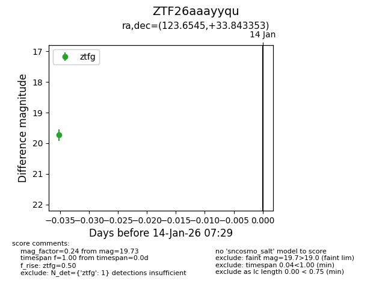
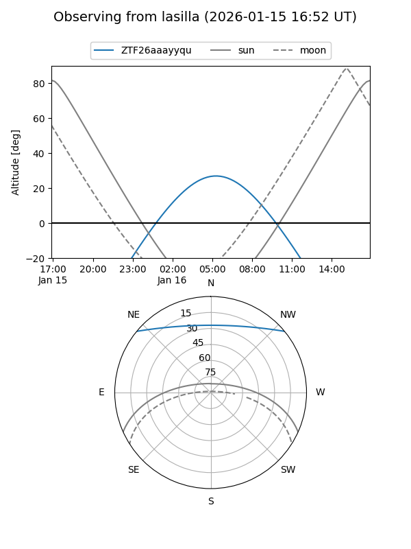
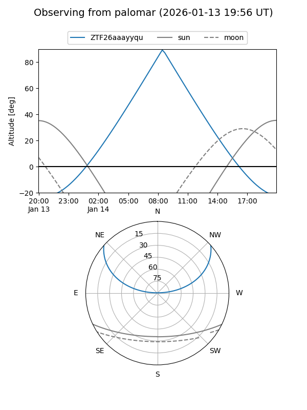

ZTF26aaayyqu
Target ZTF26aaayyqu at 2026-01-16 07:37
Aliases and brokers:
FINK: link
Lasair: link
ALeRCE: link
alt names
ZTF26aaayyqu (ztf,fink_ztf)
Coordinates:
equatorial (ra, dec) = 123.6545,+33.84335
equatorial (HMS+DMS) = 08:14:37.07,+33:50:36.07
galactic (l, b) = (187.9846,+31.08973)
Flags:
Photometry:
last ztfg=19.73
1 ztfg detections
Lightcurve

Visibility


Additional plots